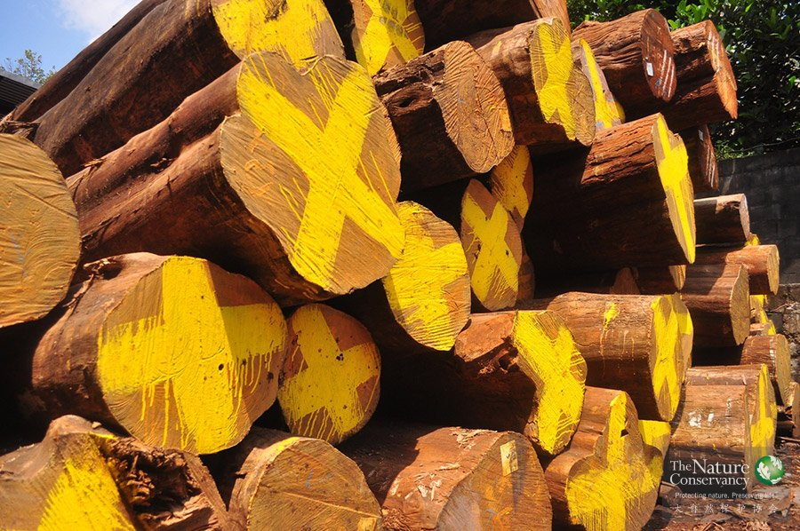
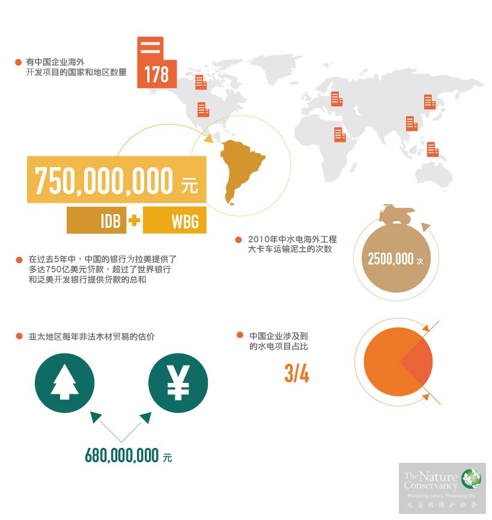

项目概览

目标
“保护无国界”项目是中国TNC的国际性保护项目，致力于推进中国海外投资和贸易往来的可持续发展。重点关注中国在海外的林产品、水电、矿业和可持续农业贸易四个关键领域，协助中国企业为其海外项目提供可持续开发方案和解决途径。
背景
近年来，越来越多的中国企业在海外投资和发展，能否实现可持续开发，以最少的自然代价获取利益，履行企业对地球的责任，是所有中国企业共同面对的全新挑战。
项目规划
负责任的林产品贸易
中国是热带木材最大的进口国，全世界出口的木材超过一半都在中国加工处理。TNC及合作伙伴共同创建和运作着“亚洲负责任林业与贸易（RAFT）”合作网络，以推动中国与木材供应国合作规范森林经营及木制品进出口、加工行为，完善市场的法律秩序。TNC将为中国企业提供追踪合法木材贸易路径的指南，帮助更多中国企业秉承可持续森林资源利用的理念，以负责任的贸易伙伴形象参与国际市场竞争。
海外水电绿色开发
目前，中国正在全球66个国家投资或直接兴建超过300个大型水坝。能否在工程规划和建设中全面实现开发与资源保护并举，成为世界关注的新焦点，也是中国海外投资开发企业面临的新课题。TNC正在同中国的水电企业开展合作，利用TNC在全球35个国家的员工和办公室，和TNC对这些地区环境数据、环保法规和环境规划的了解，同项目所在国政府、环保机构、水电开发企业以及来自全世界的专家一同探索并实施双赢的解决方案。
TNC完成了由中国援建的水电项目发展、规模和影响的综合性国际研究，为未来在全球其他地区开展类似项目打下了基础。
可持续性大豆贸易
中国已经超越美国，成为巴西和智利最大的贸易伙伴。巴西有超过70%的大豆销往中国。大豆种植面积的不断增长使得巴西的森林砍伐率居高不下，而巴西森林是世界上保存最完整、面积最大的热带雨林，是人类重要的生态资源。TNC正在与购进大豆的中国企业和政府部门合作，通过提高巴西、阿根廷和巴拉圭既有大豆农场，而非伐木开垦的农场在中国市场的比例，来提高拉美-中国大豆贸易的可持续性。
成果

10月
21
今年秋天，从北极向南迁徙的鸟群会在加利福尼亚发现一片2800多公顷全新的湿地可以停歇。这片湿地曾是稻田，水稻收割后被浅水泡了几个星期，形成了新的候鸟栖息地。这得益于大自然保护协会（TNC）与美国国家航空航天局、地质调查局共同开展的鸟类回归项目。
2月
10
在保护的同时兼顾生态平衡是一项十分复杂的工作，科学家们对生态系统中复杂的交互作用知之甚少。就以隆头鹦哥鱼为例，科学家一度以为它们对珊瑚礁有益，能吃掉死去的珊瑚、清除附着在珊瑚礁上的藻类，为新珊瑚提供生长空间。但现有的证据表明，除了这些益处外，隆头鹦哥鱼给生态系统带来的危害也不可小觑。

大自然保护协会（TNC）和国际爱护动物基金会(IFAW)和中国互联网巨头腾讯合作，共同打击网络中的野生动物交易，推动大象保护。这些活动将对野生动物保护产生重大影响。